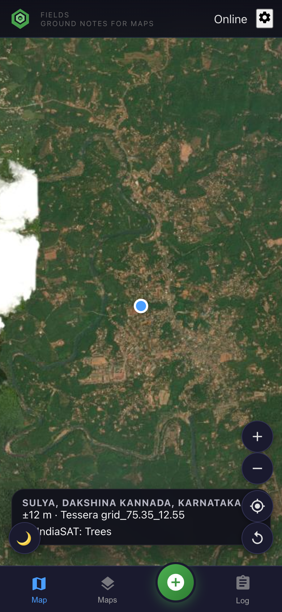
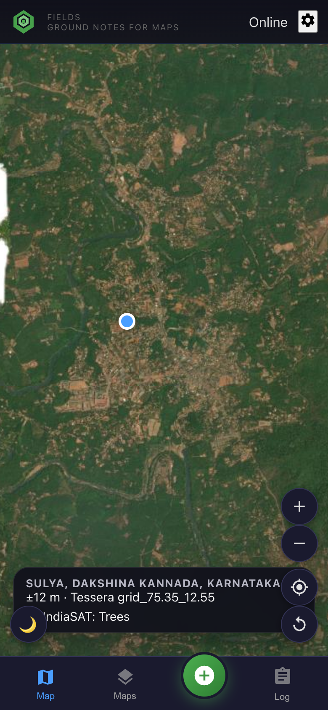
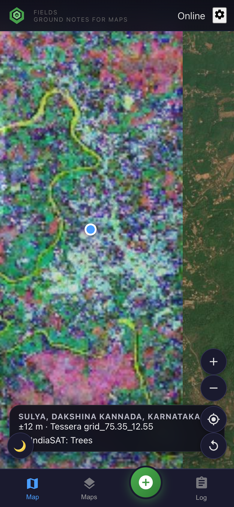
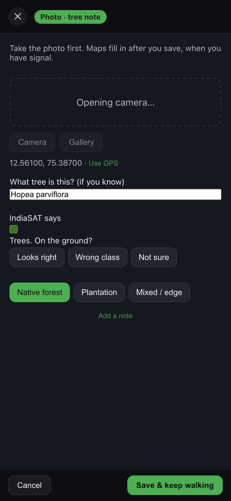
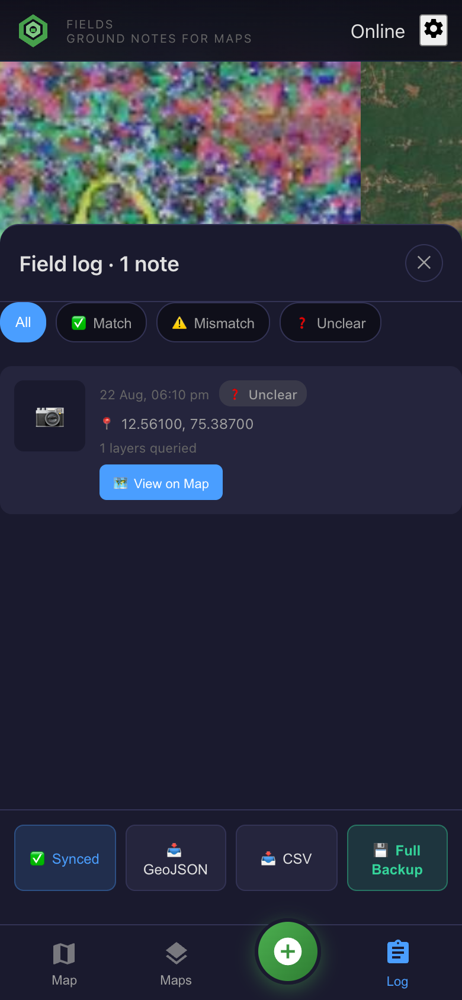

Flow 2 · Tessera tree species
Tessera embeddings are 128 numbers per 10 m cell. The phone never downloads that tensor. It paints a 3-band RGB fingerprint (embedding bands 30, 60, 90) for the single 0.1° tile under you — magenta and cyan, not IndiaSAT’s green/yellow/red legend. Similar colour ≈ similar landscape. You supply the species name.
Sulya’s four tiles are packed in the app (~75 KB each). Other tiles need signal and the Tessera proxy.

Always on the spot bar: Tessera grid_75.35_12.55
GPS snaps to Tessera’s 0.1° grid. That id is written on every save, even offline. Colour is optional.

Import the trial landscape (or your compartments)
The packed colour covers the Sulya polygon. Off that box, use a proxy or collect ids only.

Tessera landscape colour · noisy RGB, not land-cover classes
Maps → Tessera landscape colour. IndiaSAT switches off. Photograph where the fingerprint changes — ridge, estate edge, river.

Species + native / plantation / mixed. Tile id rides along.
Photograph the bole or leaf. Name it if you can. Save. IndexedDB holds GPS, photo, tessera_tile_id, year 2024.

CSV · tessera_tile_id, species, stand type
Download those Tessera tiles, sample the cell at each GPS, train a species head. The phone was the label factory.